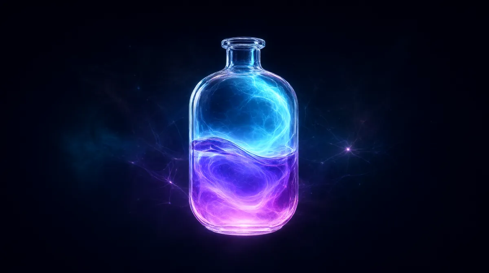
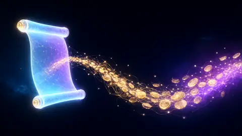

Бесплатный тест · 2 мин
🔋 Индикатор ресурса
10 вопросов о вашей энергии за последние 2 недели. Не диагноз, а честный взгляд на свой «бак».

Это авторский опросник для самонаблюдения, а не психологическая или медицинская диагностика. Результат хранится только в вашем браузере.
Ещё подарки
Другие тесты
0:54🎭Индекс самозванца10 утверждений — и вы увидите, кто у руля: вы или ваш внутренний «самозванец».2 мин · бесплатно✓ пройден 0:51🛑Кто жмёт на тормоза?8 ситуаций — и вы узнаете, какой внутренний «тормоз» чаще всего останавливает вас на пути к цели.2 мин · бесплатно✓ пройден
0:51🛑Кто жмёт на тормоза?8 ситуаций — и вы узнаете, какой внутренний «тормоз» чаще всего останавливает вас на пути к цели.2 мин · бесплатно✓ пройден
0:51🛑Кто жмёт на тормоза?8 ситуаций — и вы узнаете, какой внутренний «тормоз» чаще всего останавливает вас на пути к цели.2 мин · бесплатно✓ пройден
0:55💰Мой денежный сценарий12 утверждений о деньгах. Узнайте, какой сценарий сильнее всего влияет на ваши траты, цены и доход.3 мин · бесплатно✓ пройден